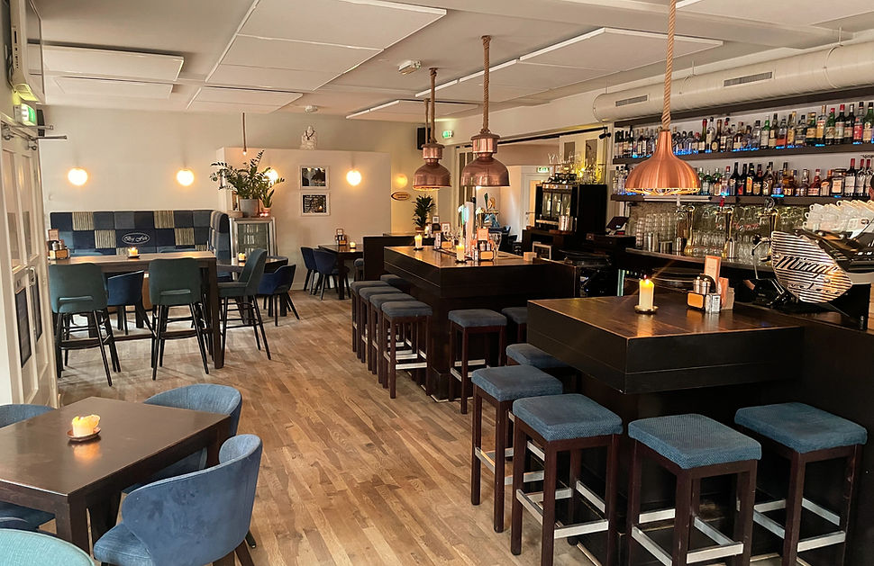
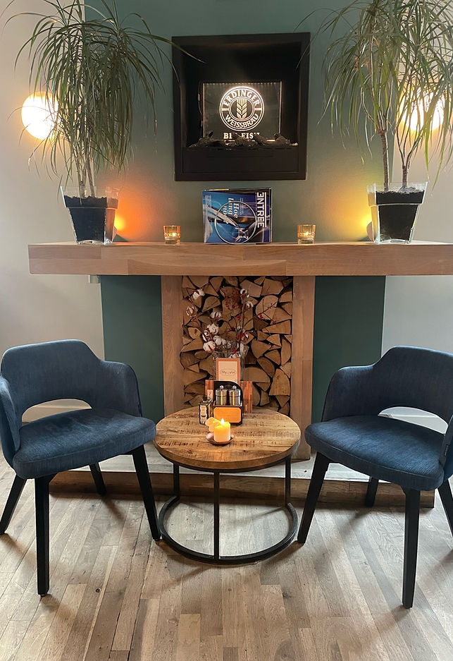

vanaf 10.00 uur
Koffie en ontbijt
Begin je dag met zorgvuldig gezette koffie, een smakelijk taartje of een ontbijtje.

Grand café sinds 2008, Huissen
Proef de gezelligheid, van heerlijk eten tot borrelpret! Koffie en ontbijt in de ochtend, lunch tot in de middag en een gezellige borrel tot laat, in het hart van Huissen.
Elke dag geopend vanaf 10.00 uur
Reserveren hoeft niet. Kom gerust langs en overleg bij binnenkomst met de bediening waar je kunt gaan zitten.
Geniet de hele week door in ons gezellige grand café in het hart van Huissen.
vanaf 10.00 uur
Begin je dag met zorgvuldig gezette koffie, een smakelijk taartje of een ontbijtje.

11.00 tot 16.00 uur
Smakelijke lunches, salades en soepen, met een perfect getapt glas bier of een verrukkelijk wijntje.

tot sluitingstijd
's Avonds transformeren we tot een warme, sfeervolle plek. Een drankje in de hand, een heerlijk borrelhapje erbij.
Getoond voor woensdag tot en met zaterdag (open tot 00.00 uur). Maandag en dinsdag sluiten we om 18.00 uur, zondag om 20.00 uur.
Ontbijtgerechten, vers gemaakte koffie, diverse soorten thee en huisgemaakte taarten. Salades, hartverwarmende soepen, sandwiches en onze eigen specialiteiten. En 's avonds een uitgebreide keuze aan hapjes.
Boter, jam of nutella of hagelslag
Yoghurt, vers fruit, honing
Wisselend, zie het bord
Sesambun, rucola, geitenkaas, gesuikerde pecannoot, ingelegde rode ui, zongedroogde tomaatjes, truffelmayonaise
Zuurdesem, Holland Jersey oud, kimchijam, nashipeer, gochujang mayonaise, sesamcracker
Pitabrood, cheddar, rode ui, rucola, chipotle mayonaise
Potatobun, kippendij, coleslaw, koriander, smokey BBQ-saus, crumble
Potatobun, runderburger, kalfsjus, augurk, ui, bacon, mosterd, Comté
Oerbrood, tomaat, bacon, augurk, honingmosterdsaus
Livar ham, Gruyère, jong belegen, bechamelsaus
Basilicum, zongedroogde tomaat, rucola, Parmezaan
Wakame, sojabonen, sojacrumble, radijs, rode ui, dille-misosaus
Truffelmayonaise, Parmezaan, pittenmix
Carpaccio, gamba's, truffelmayonaise, Parmezaan, pittenmix
Ossenworst, 7 minuten ei, Amsterdamse uienrelish, truffelmayonaise
Ketjap-bbq-saus, witte kool, komkommer, sesam, bosui
Vraag de bediening naar de soep van de dag
Crème fraîche, gesuikerde pitten, koriander
Runderbouillon, Gruyère-crostini, tijmolie
Geitenkaas, peer, gesuikerde pecannoot, spinazie, croutons, balsamico
Wakame, radijs, zoetzure ui, sojaboontjes, sojacrumble, dille-misodressing
Parmezaan, pittenmix, truffelmayonaise
Pompoen, spruitjes, miso-sinaasappeldressing, sesamzaad, cashewnoot, granaatappelpit
Van 11.00 uur tot een half uur voor sluitingstijd.
Knoflookboter, oude kaas
Keuze uit citroen-knoflookboter en pesto
Knoflook-ui-speksaus
Ranchsaus, bosui
Sesam, bosui
Guacamole, paprika-chipotlesalsa, zure room
Hollands Jersey oud, Rinse appelstroop
Gerookte amandelen, olijven, manchego, bitterballen, twister garnalen, flammkuchen chips, sweet peppers, dips
Brood, tafelzuur, gesnipperde ui, mosterd
Kerriemayonaise
Honingmosterdsaus
Chilisaus
Citroenmayonaise, saffraanmayonaise
Srirachamayonaise
Hoisinsaus
Mosterd
Mosterd
Chilimayonaise, honingmosterdsaus
Chilimayonaise, honingmosterdsaus
Alle prijzen in euro's. Koffie, thee, bier van de tap en wijn bestel je gewoon aan tafel of aan de bar.

Ontspan met een drankje in de hand. Voeg daar desgewenst een heerlijk borrelhapje aan toe en je hebt de perfecte setting voor een gezellige avond uit.
Woensdag tot en met zaterdag open tot middernacht.
Naar de hapjeskaart
Het café
Sinds 2008 kun je bij Big Fish de hele week terecht. Voor een kop koffie, een ontbijtje, een uitgebreide lunch of een gezellige borrel. Elke dag geopend vanaf 10.00 uur.
Volg ons op Instagram voor de actuele nieuwtjes.


Overnachten boven het café
Overnachten dichtbij Arnhem en Nijmegen? Ons prachtig gerenoveerde vakantie-appartement ligt midden in het centrum van Huissen, boven het grand café. Ideaal voor een nachtje, weekendje, midweek of week weg.
| Maandag | 10.00 tot 18.00 |
|---|---|
| Dinsdag | 10.00 tot 18.00 |
| Woensdag | 10.00 tot 00.00 |
| Donderdag | 10.00 tot 00.00 |
| Vrijdag | 10.00 tot 00.00 |
| Zaterdag | 10.00 tot 00.00 |
| Zondag | 10.00 tot 20.00 |
Een tafel reserveren, een groepsreservering of ruimte afhuren is bij ons niet mogelijk. Loop gerust binnen, de bediening helpt je aan een plek.
Heb je een vraag? Vul het formulier in of mail naar info@bigfishcafe.nl.
Het formulier is niet bedoeld voor groeps- of tafelreserveringen: reserveren is bij ons niet mogelijk. Kom gerust langs!
Vragen over het appartement? Kijk op de pagina Bed & BigFish.